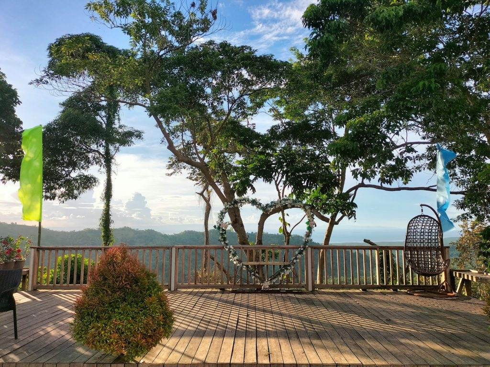

Clarin Public Market
Clarin Public Market is a place where the people of clarin buy their food and daily needs. It is located in Pob. Centro, Clarin, Bohol. It is here where the farmers and fisherman put their goods like vegetables and fish to sell.
Market
Clarin Community Hospital
Clarin Community Hospital this is where the people of clarin get their medical attention. To cure their sickness, wounds and etc. If you are admitted here, clarin doctors and nurses will take good care of you, they'll check on you throughout the day to see how you're feeling and if you need anything. Every few hours, they'll check your temperature. Nurses will also bring you any medicines you may need while you're sick. They will be on your side until you feel better and fully healed.
Hospital

Saint Michael the Archangel Parish
Saint Michael the Archangel Parish is located at Pob. Centro, Clarin, Bohol near the Clarin Public Market. St. Michael the Archangel Parish was originally named Virgin of the Holy Rosary Parish created in 1922 per the Erection Decree promulgated by Archbishop Juan P. Gorordo, the first bishop of the Archdioceses of Cebu (1910-1930). It is here where the people of clarin worship and pray to God. Every Sunday there are three masses to be held the first mass, the second mass, and the third mass.
Clarin Church
BISU-Clarin Campus
Bohol Island State University Clarin-Campus is a place to study for college students. They can study various courses here like BSCS, BEED, BSHM, BTLED-HE, BSED-MATH and BSES-CRM. Here they can learn many things to develop their talents and skills.
Campus

Sofia Scenic View
Sofia Scenic View is a place that every people can enjoy. It was located in Caboy, Clarin, Bohol along in the national highway road. In Sofia's scenic view, you can spot the beautiful overlooking view of my hometown Clarin, especially when the sunset occurs the overlooking view where you can gaze at the mountain and sea are really breathtaking, and you can also spot the city of Cebu. In there you can enjoy their different delicacies and they also have band entertainment at night that will surely entertain you. They also have a warm cozy pool that kids and adults can enjoy. Surely, Sofia's scenic view is one of the places in our municipality of Clarin that you can visit anytime to relax and enjoy.
Scenic View
Binaliw Falls
Binaliw Falls is one of the tourist spots that can be found in the municipality of clarin. It was located in Cantoyoc, Clarin, Bohol. Binaliw Falls is not a very high fall but it is stunning because of its emerald water. People will really enjoy binaliw falls when they visit there not only for its stunning view but also for the relaxing and calm atmosphere it brought. Its water is also cold and refreshing.
Falls

Bung-aw Eco Farm
Bung aw Eco Farm is a truly unique resort that would please aduls and children. With its eco-friendly environment it is a perfect place to have a visit.
Eco Farm
Fiesta of Clarin
Fiesta in Clarin is one of the historical events in the town of Clarin. It brings happiness and joy to the people celebrating it. Fiesta only occurs once a year and it consists of different types of entertainment including singing, dancing, sports, etc. It also held a contest that people can join and enjoy. Fiesta brings people closer to each other it unites us.